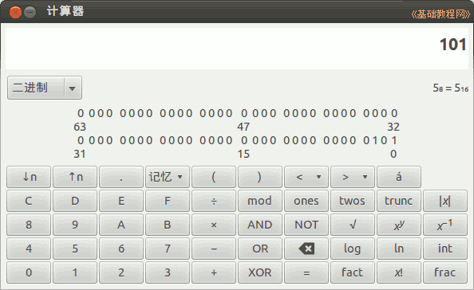

2011-2012 第一学期七年级电脑操作教学设计
作者：TeliuTe 来源：基础教程网
十九、学会二进制运算 返回目录 下一课
（一）教学设计
1、学习目标：学会二进制运算
2、注意事项：出几道题，每组做二道对应的
3、教学过程：
1）教师准备学案和板书；
2）学生整队进入，开机抄黑板上笔记；
3）教师讲解板书演示操作；
4）学生打指法、日志、完成操作；
5）教师打勾记录学生指法成绩，检查日志和操作；
注：学生抄完笔记就开始打指法、日志，老师讲完后再继续完成；
（二）板书设计(学生笔记)
第19课 学会二进制运算
1、电脑程序靠数学运算和逻辑运算
2、电脑采用二进制0和1表示所有数
3、数量表示：0,1,10,11,100,101
（0,1,2,3,4,5）
4、加法规则是满二向上进一位数
5、列如 1+1=(2)=10
--
练习题，每组做一题
2+3=？
3+5=？
4+5=？
2+4=？
操作图示：

（三）课后记 2012-11-9
--
接着上一节的把二进制再学一课时
慢慢把基础的理论学上一点简单的
--
举一个开关的例子来说明逻辑运算
也就是判断题，比如上课还是下课
--
电脑用二进制的原因是
二进制既可以做数学运算也可以做逻辑运算
--
做的很快，但是理解的不多
也只能是打个基础，有个基本概念
--
操作是在计算器里做上二进制的加法题
需要绕个弯，把十进制的数换成二进制来算
--
把一个塔防Flash游戏添加进去，这个游戏策略性很高
估计会让学生入迷上好久，后面需要控制住
--
写了一个操作说明，这样学生可以自己去学着看文档
Uchome 的时间读取有问题，抽空把各个文件检查
--
农场要挖掉重种，牧场让我给清空了
刚好把游戏的瘾头减缓一下
返回目录 下一课
本教程由86团学校TeliuTe制作|著作权所有
基础教程网：http://teliute.org/
美丽的校园……
转载和引用本站内容，请保留作者和本站链接。